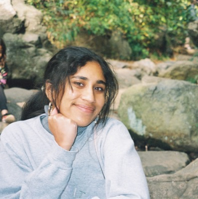

Senior Researcher @ Bloomberg
Adjunct Faculty @ Columbia University
Hello!! I'm Shreya, a senior researcher at Bloomberg. I'm also an adjunct professor at Columbia University, where I teach COMS 4995-15: Designing LLM Agents.
I recently finished my PhD at the University of Pennsylvania, where I worked with Penn NLP, advised by Lyle Ungar and Eric Wong. My PhD research was supported by the NSF GRFP. Before that I attended USC (Fight On!!), where I received a B.S. in Computer Science & Applied Mathematics and worked with Morteza Dehghani at the Morality and Language Lab. I’ve also interned at Google DeepMind and Spotify Research.
I research sociotechnical alignment of LLMs, with a focus on evaluating and mitigating cultural bias. My work looks at how LLMs handle context-dependent phenomena such as implied meaning and social norms, and I have developed frameworks to assess how they represent subjective concepts like politeness, emotion, and individualism. I have also built methods to improve model outputs, including preserving speaker intent in translation and adapting advice to multicultural users.
Beyond my research, I care deeply about representation and accessibility in ML. I founded the UPenn chapter of Women in ML (WiML) in 2023, and taught CIS-1990, a mini-course on AI agents at UPenn in 2026.
I also like to cook, run, and ask strangers if I can pet their dogs. Please reach out if you want to chat about my research, the GRFP, or the PhD application process!